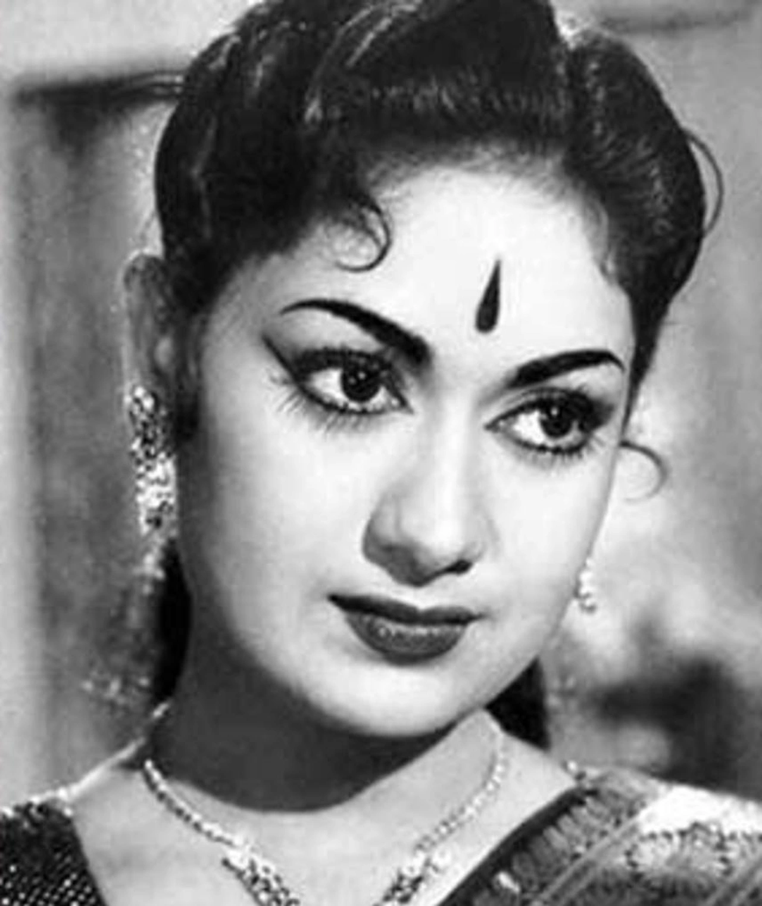

Savithri
(1935 – 1981)
Savitri Ganesan was an Indian actress, playback singer, dancer, director, and producer known for her works primarily in Tamil and Telugu cinema.
She was born on 6 December 1935
She was died on 26 December 1981
* savithris name before marriage is Nissankara Savitri
* Savitri's first significant role was in the 1952 Tamil-Telugu bilingual film "Pelli Chesi Choodu"
* Her films like Devadasu (1953),Donga Ramudu (1955), Mayabazar (1957), and Nartanasala (1963), Missamma (1955), Ardhangi (1955), Thodi Kodallu (1957), Mangalya Balam (1959), Aradhana (1962), Gundamma Katha (1962), Doctor Chakravarty (1964), Sumangali (1965), and Devata (1965) are most famous of all the times.
*Savitri received "A Moon Among Stars" honor at the 30th International Film Festival of India
Savithri's most famous role‘Mayabazar’ (1957) was an epic Indian period film that was released in both Tamil and Telugu languages. Based on the story of Mahabharata, ‘Mayabazar’ follows Lord Krishna’s efforts to unite Arjuna's son Abhimanyu with his lover, Vatsala who was Balarama’s daughter. Made on a lavish budget at that time, the film starred some of the big names like NT Rama Rao, SV Ranga Rao, Savitri, Gemini Ganesan and MN Nambiar. ‘Mayabazar’ was touted to be the costliest film at that time and became a blockbuster success upon release. Even today, the film is more remembered for its breathtaking visuals and performances by the lead actors. Savitri essayed the eponymous Sasirekha aka Vatsala in the film. In 2010, a digitally re-mastered version of ‘Mayabazar’ was released in Telugu and opened to favourable reception from critics and audience alike. |
.jpg) |